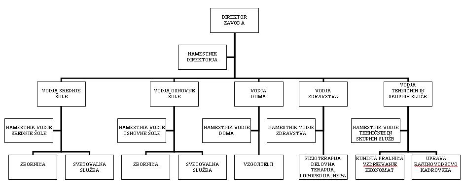

|
Organizacija je združba ljudi, ki so se združili zato, da bi zasledovali in uresnièevali dogovorjene skupne cilje. Tudi CIRIUS Kamnik je taka organizacija. V CIRIUS so združeni ljudje zato, da zasledujejo dogovorjene skupne cilje. Ti dogovorjeni skupni cilji so zapisani v statutu CIRIUS Kamnik in v Aktu o ustanovitvi CIRIUS Kamnik. Dogovorjeni skupni cilji organizacije CIRIUS Kamnik so: "CIRIUS Kamnik je ustanovljen za opravljanje vzgojno-izobraževalne dejavnosti, ki se opravlja kot javna služba na podroèju izobraževanja gibalno oviranih otrok, na podlagi programov, ki jih doloèi minister, pristojen za šolstvo. CIRIUS izvaja tudi zdravstveno dejavnost, ki se opravlja kot javna služba na ravni osnovne zdravstvene dejavnosti, specifiène specialistiène dejavnosti in rehabilitacijskih storitev (fizioterapija, delovna terapija, logopedija, klinièna psihologija). CIRIUS lahko opravlja tudi druge dejavnosti, povezane z vzgojo in izobraževanjem." Organizacije oblikujejo ljudje zato, ker posameznik ne more doseèi želenega cilja. Posameznik ne more doseèi želenega cilja, èe je ta zahteven, zapleten ali obsežen. Take zahtevne cilje lahko dosežejo ljudje le, èe združijo svoje moèi. V takih združbah ali organizacijah pa vsak posameznik prispeva svoj delež znanja, dela, telesnih naporov, idej ali kakšnih drugih pomembnih prvin. V CIRIUS Kamnik so cilji organizacije zapleteni in sestavljeni iz veè sestavnih delov, komponent. Na podroèju izobraževanja je potrebnih veè uèiteljev, ki so usposobljeni za posamezne predmete. Na enoti vzgoje prispevajo svoj delež k uresnièevanju ciljev organizacije vzgojitelji. V okviru enote zdravstva in terapij je nujno potreben prispevek negovalk, bolniških sester, fizioterapevtov, delovnih terapevtov in logopedinj. Za nemoteno delovanje organizacije (CIRIUS) so potrebne tudi tehniške službe, ki skrbijo za prehrano, prevoze ter vzdrževanje materialnega premoženja organizacije. Èistilni servis skrbi za èistoèo prostorov, v katerih organizacija deluje.  Organigram CIRIUS Kamnik 1. Vprašanja za usmerjanje pozornosti in usvajanje novih besed: 1. Kaj je organizacija? 2. V kakšnem primeru mora priti do nastanka organizacije? 3. Kakšna je prednost organizacije pred posameznikom? 4. Kakšni so cilji CIRIUS Kamnik? 5. Naštej organizacijske enote CIRIUS Kamnik? 6. Opiši naloge organizacijskih enot CIRIUS Kamnik? 7. Kako se imenuje slika, ki prikazuje organizacijski ustroj neke organizacije? 2. Zapiši od ene do pet kljuènih besed, ki povzemajo vsebino te uène enote. 3. Vprašanja za razmislek, ponavljanje in povezovanje z lastno izkušnjo: 1. Naštej nekaj organizacij, ki delujejo v tvojem domaèem okolju! 2. Kakšni so cilji organizacij, ki si jih naštel/a pod vprašanjem 1? 4. Domaèa naloga: V enem do petih stavkih zapiši, kaj ti je v tej uèni enoti najbolj ostalo v spominu. |